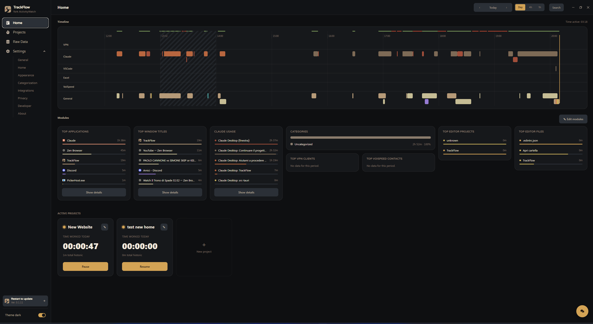
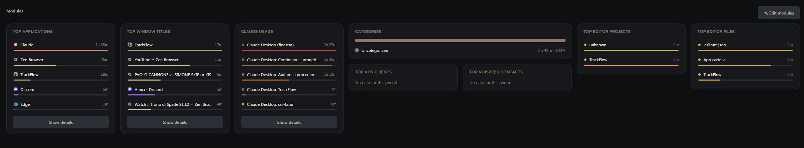
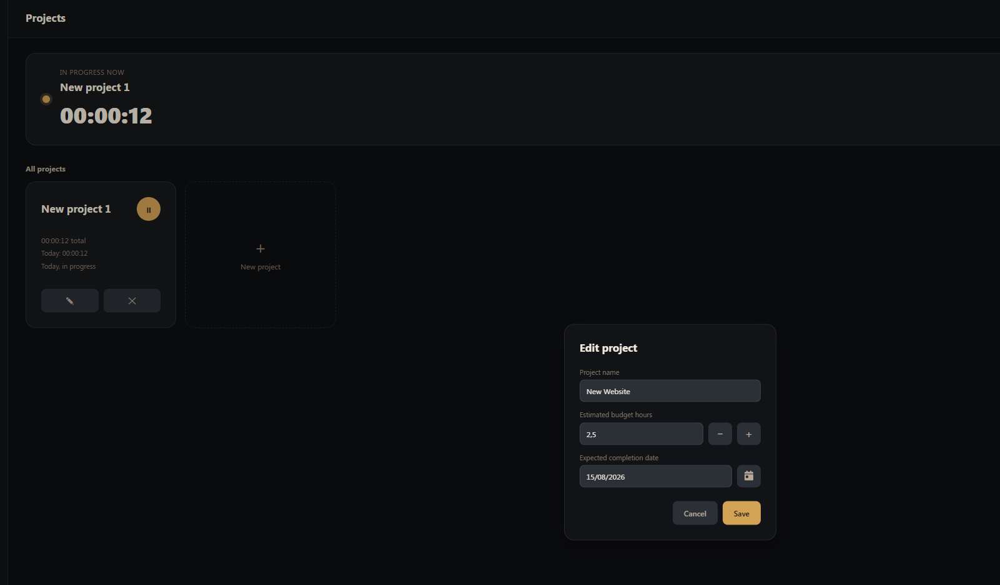
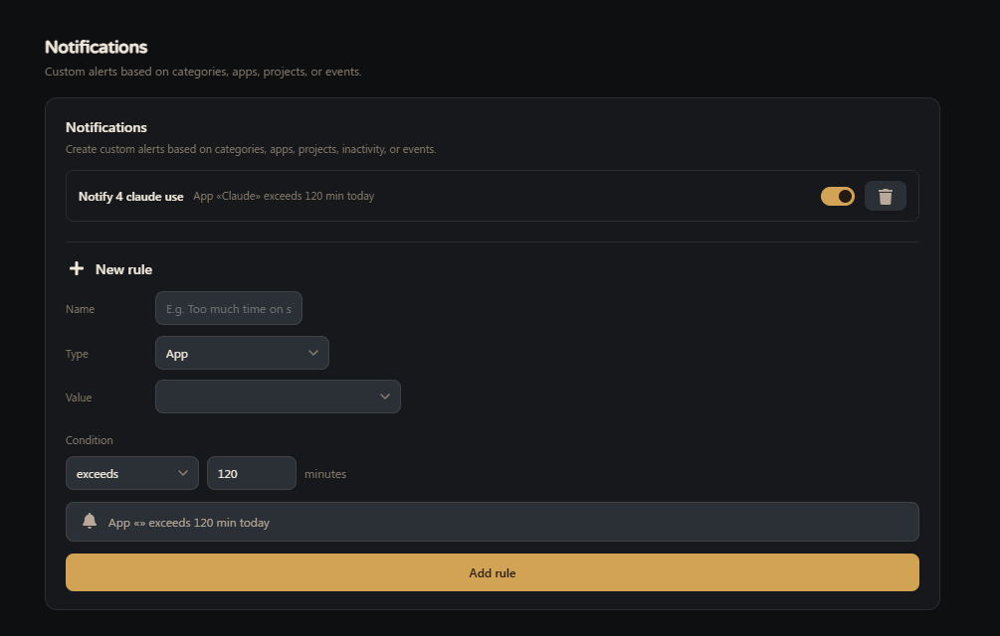
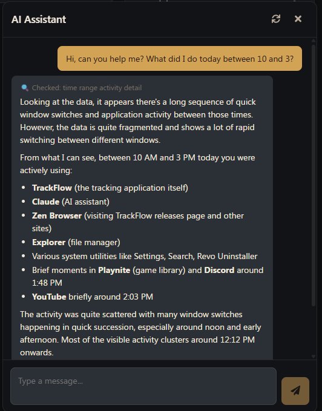

TrackFlow tracks the apps, projects and time you spend on Windows in the background, with no manual timers, and keeps every byte of it on your own machine.

Automatic tracking, real project budgets, and privacy controls you actually control.
Active window, app and idle detection run in the background — no start/stop timers to remember.
Browser tabs, VS Code, Excel, and Claude Code sessions each get their own timeline, automatically.
Track time per project against a budget in hours, with deadlines and over-budget warnings.
Group apps into categories by hand, or let Claude suggest and apply the grouping for you.
Regex-based rules redact or drop sensitive window titles and URLs before anything touches disk.
Alerts for a category running long, a project nearing budget, or too much idle time — your rules.
Ask about your own tracked data in plain language — it queries the real numbers, never guesses.
Optional periodic desktop captures with configurable interval and retention, browsable in a gallery.
VPN sessions mapped to client names, plus VoiSpeed call history synced alongside everything else.

Top applications, top window titles, editor projects and files — all tracked automatically and summarized the moment you open the app, no report to run.

Every project gets a running total, a budget in hours, and an optional deadline — so you know you're over budget before a client tells you.

Group apps into categories manually or with AI assistance, then set custom alerts — a category running long, a project nearing its budget, or too much idle time.

Powered by Claude, the built-in assistant looks up your real tracked data before responding — how long on a project, what app dominated your afternoon, whether you're over budget — no memory, no guessing.
TrackFlow is built for one machine, not a synced fleet — everything it tracks stays in your own local database. It's a fork of ActivityWatch, open source under the MIT license.